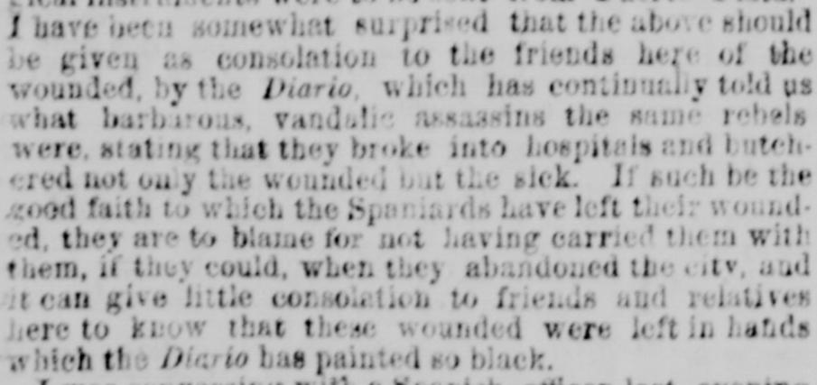
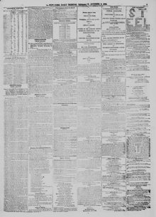

See the full pageVer la página completaThem, if they could, when they abandoued the city, sud tA ellos, si pudieran, cuando abandonaron la ciudad, y
Based on the provided excerpt, a high-grade Spanish officer reported that Spanish losses in Santo Domingo exceeded 2,000, and estimated rebel forces numbered between 20,000 and 30,000. Additionally, the newspaper reported that New York and Boston papers were hoaxed regarding a bombardment of Puerto Plata by Spaniards, clarifying instead that Col. Ar.zon landed at night, drove out the Dominicans, and liberated Gen. Fuero and his troops.A tenor del extracto, un alto jefe militar español comunicó que las bajas españolas en Santo Domingo superaban los 2.000 hombres y calculó que las fuerzas rebeldes oscilaban entre 20.000 y 30.000 combatientes. Asimismo, el diario aclaró que los periódicos de Nueva York y Boston habían sido objeto de un bulo sobre un presunto bombardeo de Puerto Plata por parte de los españoles, explicando que en realidad el coronel Ar.zon desembarcó de noche, desalojó a los dominicanos y liberó al general Fuero y a sus tropas.
FULL TEXT:TRADUCCIÓN:
I have been somewhat surprised that the above should be given as consolation to the friends here of the wounded, by the Diario, which has continually told us what barbarous, vandalic assassins the same rebels were, stating that they broke into hospitals and butchered not only the wounded but the sick. If such be the good faith to which the Spaniards have left their wounded, they are to blame for not having carried them with them, if they could, when they abandoned the city, and it can give little consolation to friends and relatives here to know that these wounded were left in hands which the Diario has painted so black.He estado algo sorprendido de que lo anterior debiera darse como consuelo a los amigos aquí de los heridos, por el Diario, que nos ha dicho continuamente qué asesinos bárbaros y vandálicos eran los mismos rebeldes, afirmando que irrumpieron en hospitales y masacraron no solo a los heridos sino a los enfermos. Si tal es la buena fe a la cual los españoles han dejado sus heridos, son culpables por no haberlos llevado con ellos, si pudieron, cuando abandonaron la ciudad, y puede dar poco consuelo a amigos y parientes aquí saber que estos heridos fueron dejados en manos que el Diario ha pintado tan negras.
New-York Daily Tribune. New-York [N.Y.], October 8, 1863.
See the original at the Library of CongressVer el original en la Biblioteca del Congreso
Published by: Greeley & McElrath, 1842-1866.Publicado por: Greeley & McElrath, 1842-1866.
Edition: Edition 1Edición: edición 1
Page: 5Página: 5
Frequency: daily (1842–1866)Frecuencia: diario (1842–1866)
Collection: Chronicling America, Library of CongressColección: Chronicling America, de la Biblioteca del Congreso
LCCN: sn83030213LCCN: sn83030213
ISSN: 2158-2661ISSN: 2158-2661
OCLC: 9388331OCLC: 9388331
Rights: public domain, according to the Library of CongressDerechos: dominio público, según la Biblioteca del Congreso